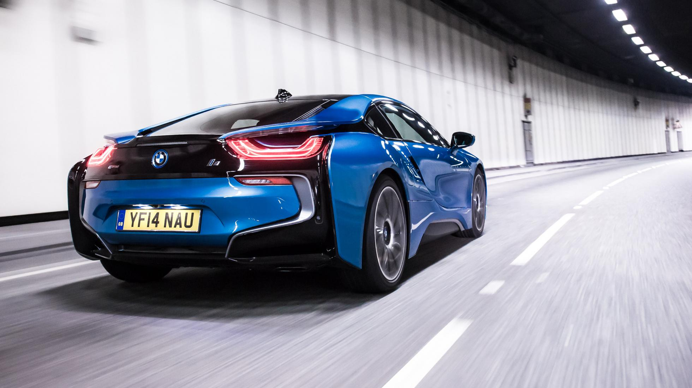
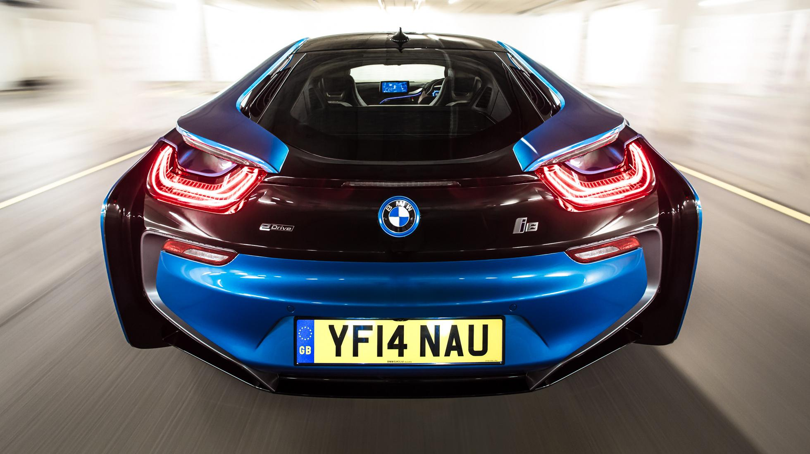
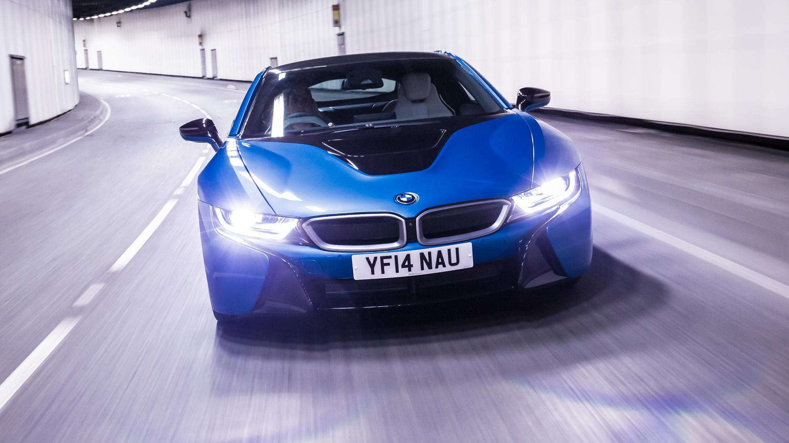
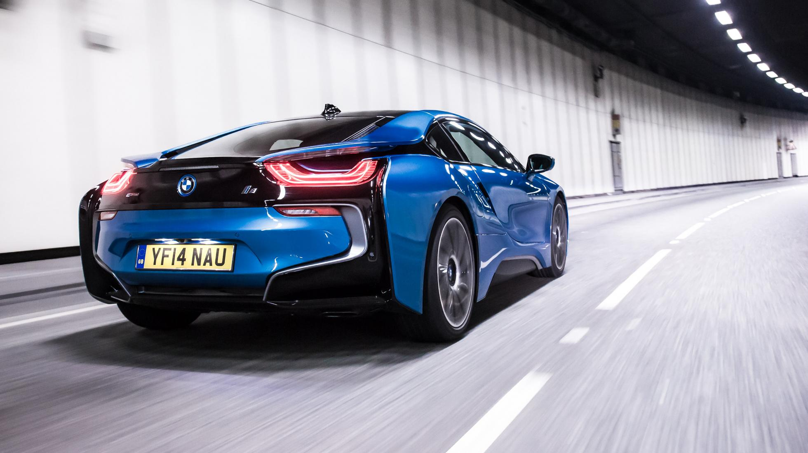
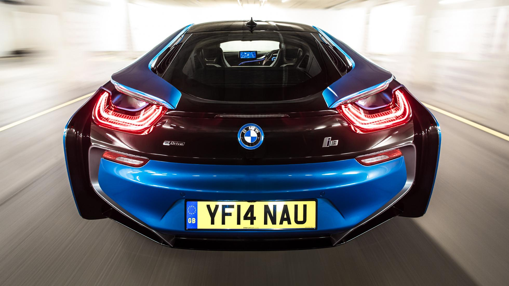
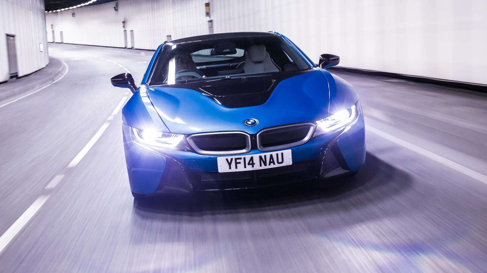
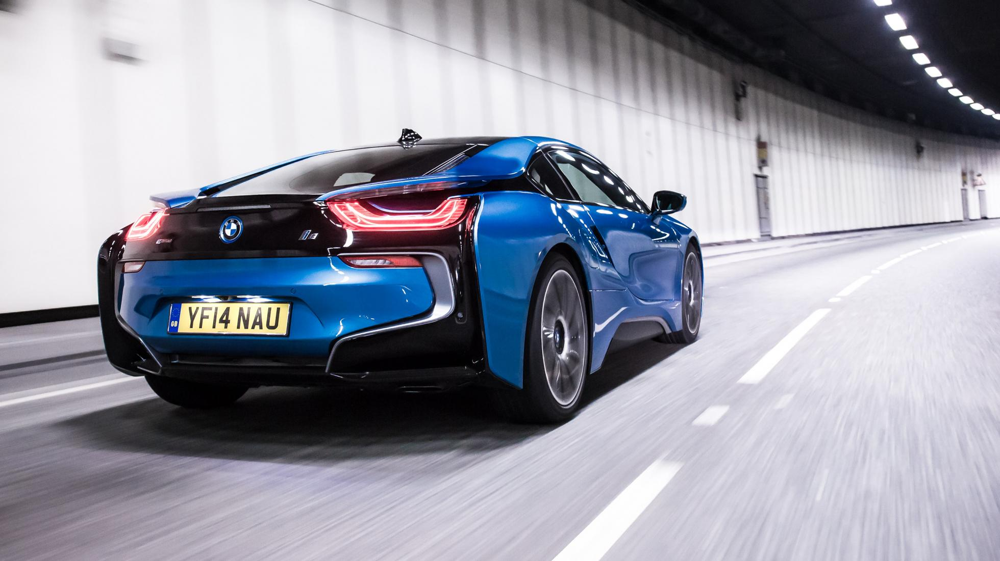
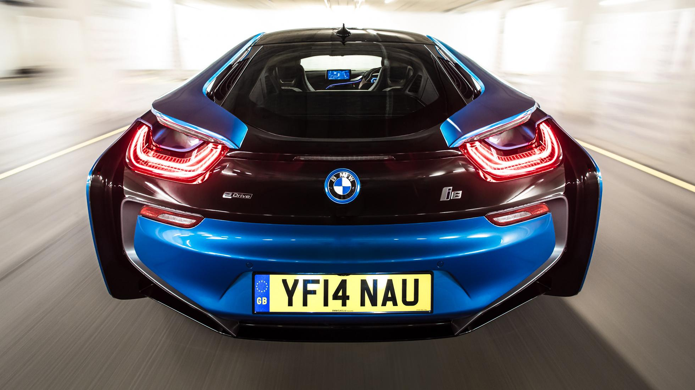
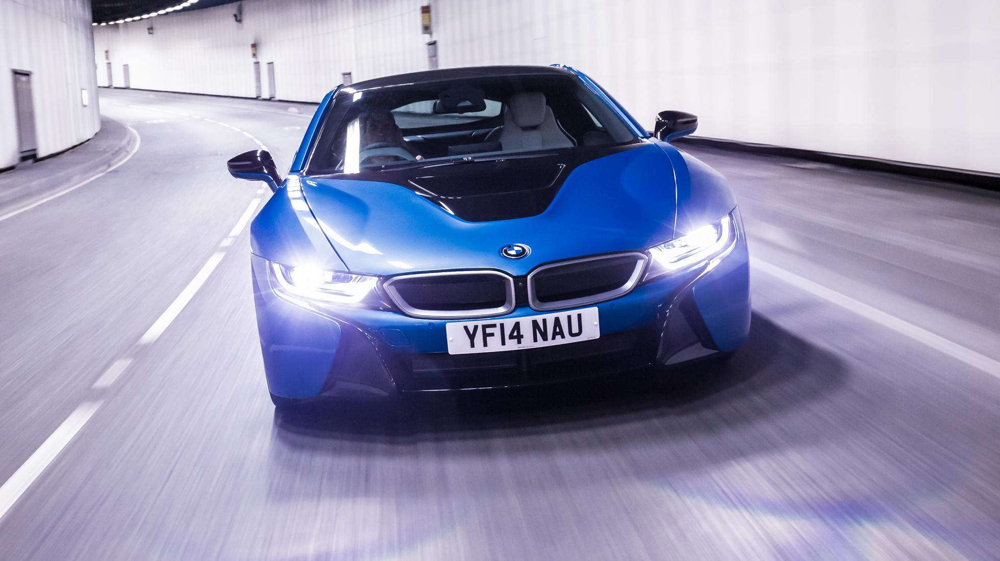

| MODELLO | Prezzo | l motore e disp. cilindri | CV | km/h | 0-100 | km/l | kg |
| i8 | 139.650 | 1499 L3 | 362 | 250 | 4,4 | 47,6 | 1485 |



La BMW i8 è una vettura sportiva ecologica prodotta dal costruttore bavarese presentata al salone di francoforte nel 2009 come concept car e lanciata sul mercato nel 2015. La linea è accattivante, affilata, l'assetto basso e aerodinamico. La scocca è realizzata in fibra di carbonio, gli interni presentano un allestimento tecnologico di ultima generazione, troneggiati da un ampio tablet con funzione di display e navigatore. questa ibrida Plug-in presenta un'alimentazione così distribuita: le ruote anteriori sono collegate con l'unità elettrica fornita di batterie al litio da 131 cv, mentre quelle anteriori ottengono propulsione da un motore 1.5 a tre cilindri con 231 cv di potenza. La BMW è un vera supercar, offre prestazioni davvero eccezionali. Al volante risulta rapida e precisa, dotata di un ottimo sistema frenante di ultima generazione. I prezzi partono da € 139.650 per l'allestimento base.